Notes for CS2100
Notes for CS2100 - Computer Organization
C Programming
Introduction to C
Features of C
Computer organisation is the study of internal working structuring and implementation of a computer system. It refers to the level of abstraction above the digital logic level, but below the operating system level.
Why is C so fast?
Edit code(vim tmp.c) -> Source code(tmp.c) -> Compile(gcc tmp.out) -> Executable Code(tmp.out) -> Output
von Neumann architecture(Prinston Architecture)
Central Processing Unit
- registers
- A control unit containing an instruction register and program counter
- Arithmetic/Logic Unit(ALU)
Memory Random Access Memory
Input Output Devices (I/O Devices)
Why every varaible must be declared?
The execution code for different variables in Source Code is different
Data Types
- int (\(2^{31}\) To \(-2^{31}\)) 4 bytes
- float(4 bytes) or double(8 byte)
- chars(8 bit integer)
- Do note that an int doesn't always take up 4 bytes, it depends on the machine architecture
sizeof( <variable> or <DataType> ): returns the size of the variable
Sample C Programme
1 | /*Preprocessor Directives*/ |
1 | -Wall //gives all warnings |
Computation
1 | /* */ |
Selection Structures
1 | /*Selection Strcture*/ |
Pointers and Functions
Pointers
1 | int a = 123; |
Why do we use pointers!
- When we pass the address of a variable into a function! See the Functions part of the blog.
Funcitions
TO use math functions, (1) include <math.h> (2) compile with -lm option
It is generally a good practice to put a function prototypes at the top of the program before the main() function.
1
2
3
4
5
6
7
8
9
10
11
12
13
double circle_area(double); //function prototype(parameter names not needed)
//Without function prototype declaration,
//C thinks that the function returns int by default
int main(void) {
}
//the function returns the area of a circle
double circle_area(double diameter) {
return PI * pow(diameter / 2, 2);
}Parameters are passed by value.
local variables inside a function only exist during the execution of a function. They are called automatic variables.
So if we want to access a value outside a function, we need to use pointers!
Array String and Structures
Array
Handle homogeneous data(the same type). When declaraing an array, include the type, name and size.
Array elements occupy contiuous memory locations.
1 | int a[5]; //will not initialize |
String
- A string is an array of char with a null character '\0'(ascii value 0) at the end.
1 |
|
Structures
Structures allow grouping of heterogeneous members.
1 | typedef struct { |
Number System
Introduction
Decimal Number System 1. Weighted-posistional number system 2. Base(radix) is 10 3. Each position has a weight of power of 10. (1.2 where 2 has a weight of \(2^{-1}\)) 4. e.g.: 7594.36 is a 6 digit number with 2 decimal places
Prefix 1. 0 for octal(8) 2. 0x for hexadecimal
Converting Decimals
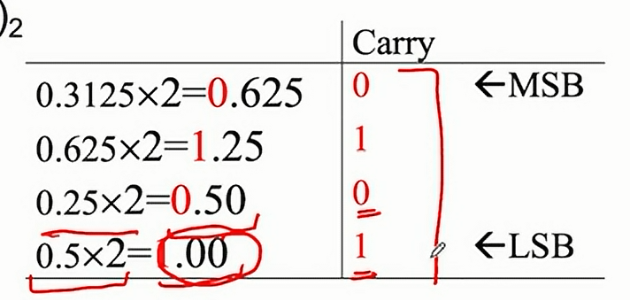
American Standard Code for Information Interchange
7 bits, plus 1 parity bit(odd or even parity) (Count the number of 1 bits and check whether it is even/odd(_0101101: odd parity should be 0))
Converting: '9' - '0' = 9
Signed and Unsigned Values
Ways to represent
Sign-and-Magnitude
- sign bit: 0 for + and 1 for -
- \({10100000}_{sm} = 33_{10}\)
1s complment
- -x = \(2^{n}\) - x - 1
- to negate x, just invert all the bits
- MSB still represents the sign, 0 for positive, 1 for negative
- MSB's weight: (in n bits, ) \(-2^{n-1} + 1\)
2s-complement
- -x = \(2^n\) - x
- Negate x: invert all bits and add 1
- shortcut: from right to left, copy everything until the first 1. invert everything to the left of the first 1. (e.g: 00101000 -> 11011000)
- MSB still represent the sign, 0 for positive
- in a 4-bit 2s number, the MSB has a weight of -8 ([U] Prove that?)
Excess Notation
- Allows the range of values to be split evenly betweent the positive and negative values.
- the Excess-n notation means that in order for a negative number x to
be negated, you need to add n to it. (e.g.: for the excess-4 notation,
add 4 to -2 inorder to get 2)
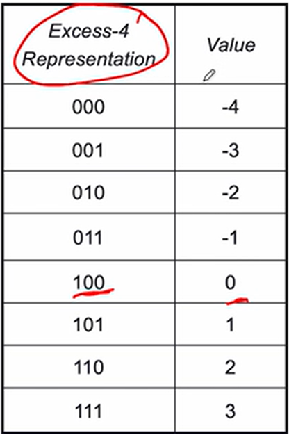
For a 4-bit system, - SM: 0 to 7, -0 to -7 - 1s: 0 to 7, -0 to -7 - 2s: 0 to 7, -1 to -8 -8 is 1000
So 1
2int x = 2147483647; // 2^31 - 1
x = x + 1;// 0111...1111 + 1 = 1000....000 = (-2147483648)10
Complement on Fractions For fractions, simply ignore the '.'
Addition and Subtraction
2s Complement
Simply disgard the additional bit U
For subtraction, add \((-x)_{2s}\) U
Overflow Checking
If the carry in and carry out of the MSB is different, then a overflow occurs.
e.g.: 1001 + 1101 - in:0 out: 1 thus an overflow1s Complement
- Addition: If there is a carry out of the MSB, add 1 to the result ([U] why does this work?)
- Subtraction: add \((-x)_{1s}\)
Representation of Numbers
Fixed vs Floating
Fixed Point Representation The allocated number for the number part and fractional part are fixed.
Floating Point Representation Allows representation of very large and very small numbers.
IEEE 754 Floating-Point Rep.
- Components:sign - exponent - mantissa(fraction)
The sign is for the mantissa, not the exponent
- Format: Single-precision(32 bits)
1-bit sign, 8-bit exponent with bias127(excess-127), 23-bit mantissa
The Mantissa is normalised with an implicit leading bit 1.
This means that we will always keep the part to the left of the point 1. Only the left part will be stored. e.g.: (110.1\()_2\) = 1.10\(1_2\) * \(2^2\), only 101 is stored in the mantissa. Normalisation: 123.2 \(10^{0}\) = 1.232 * \(10^{2}\)*
- E.g.: To find the IEEE 754 representation of -6.5 \[-6.5_{10} = -110.1_{2} = -1.101_{2} * 2^{2}\] Since \[Exponent = 2 + 127 = 129 = 10000001_2\] \[ (-110.1)_2 = 1_{sign}10000001_{exponent}{101 0000 ... 0000}_{mantissa}\] Or in hexadecimal \[1 10000001 1010000...00000_2 = C0D00000_{16}\]
ISA
MIPS((Microprocessor without Interlocked Pipelined Stages)
Introduction
How the computer work:
programming: High-level language(C++/java) - Compiler -> Assembly Language - Assembler -> Machine Language Instructions(1000 1100...) -> MIPS processor
components: Processor & Memory.
Bus: the data connector between the Processor and Memory.
Processor: Fast. Contains ALU; Registers(temporary value storage)
Registers:
A typical architecture has 16 to 32 registers.
Registers have no data types(assumes that the data type is correct).
Referered by number(
$0)/name($a0)

$at(register 1) is reserved for the assembler, $k0-k1(26-27) reserved for the operating system
Memory: Instruction and data are stored in memory.
ISA: abstraction between the hardware and low-level software(set of instructions) - manual for the hardware.
What's the use?
Include everything programmers need to know to make the machine code work correctly.
allow CPU designers to design functionalities in different hardware
Assembly Code Types:
Memory Instruction: move data into registers.
r0 <- load i; move data from register into memory:storeReg-to-Reg Arithmetic: Arithmetic operations can work directly on registers only. It can also take in constant values(instead of from registers).
Control Flow: Instructions to change the control flow based on conditions(e.g. Repetition(loop) / Seection(if-else) ).
Instructions
Basic
- Arithmetic Operations
Arithmetic Operations are within registers only.
1 | add $s0, $s1, $s2 # Operation, Destination, Source1, Source2 |
Logical Operations
sll: shift left(<<) logical (4 bits: 1011 1000-> 1000 0000 (*))srl: = divide by \(2^n\) (>>)and: force bits to be 0; or: force bits to be 1s; nor: nor 0 to toggle bits. nor 1 to force bits to 0.; xor: xor 1 to get not operation
Load instructions:
1 | # lui: load upper immediate |
xor: true if a and b are different; nor: not or
More Instructions
Memory Organisation
Given a k-bit address, the address space is of size \(2^k\), which is 8 locations. The memory might contain 1 byte of data in every location/address(byte addressing).
Transfer Unit:
Using distinct memory address, we can access a single byte(byte addressable) / word (word accessable). * Word is Usually \(2^n\) bytes and is the common unit of transfer between processor and memory.
Word Alignment: Words are aligned in memory if they begin at a byte address that is a multiple number of bytes in a word. (e.g. If 4-byte word, then 0-3, 4-7 aligned; 1-4, 5-9 not aligned)
MIPS is a load-store register architecture
32 registers, each 32-bit long
Memory address are 32-bit long(\(2^{32}\) addresses)
Each word contains 32 bits (4 bytes) (\(2^{30}\) memory words)
Memory Instruction
Load Word:
lw $t0, 4($s0), the memory word at Mem[$s0+ 4] is loaded into$t04 is the offset and should be multiple of 4(length of memory)Store Word:
sw $t0, 12($s0), value at$t0is stored into Mem[$s0+ 12]Load and Store Arrays:
$s3contains the base address(A[0]), h is mapped to$s2
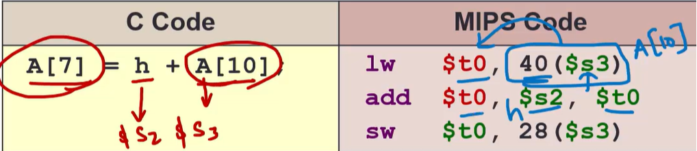
lbandsbused to load byte and store byte (when $t2 is 32 bits long, we use the lowest byte.)ulwandulsare pseudo-Instructions for unaligned load word
Consecutive word address in machines with byte-addressing do not differ by 1, it differs by length of word!
Control Flows
1 | # Conditional (branch) Instructions |
Instruction Formats
MIPS Instruction Encoding
Each MIPS Instruction has a fixed length of 32 bits(word alligned).
Remember that the opcode and funct values on the sheet are hexadecimal!
R format(Register):
op $r1, $r2, $r3(e.g.: srl sll add sub)opcode rs rt rd shamt functonly 32 registers, so only 5 bits for each registers. Same for shamt(), since shifting 32 bits clea the entire register. opcode and funct are 6 bits.
opcode are 0 for all R-Format.
funct specifies the instruction
rs: source register; rt: target register; rd: Destination register;
shamt: amount a shift instruction will shift by. 0 for all non-shift instructions
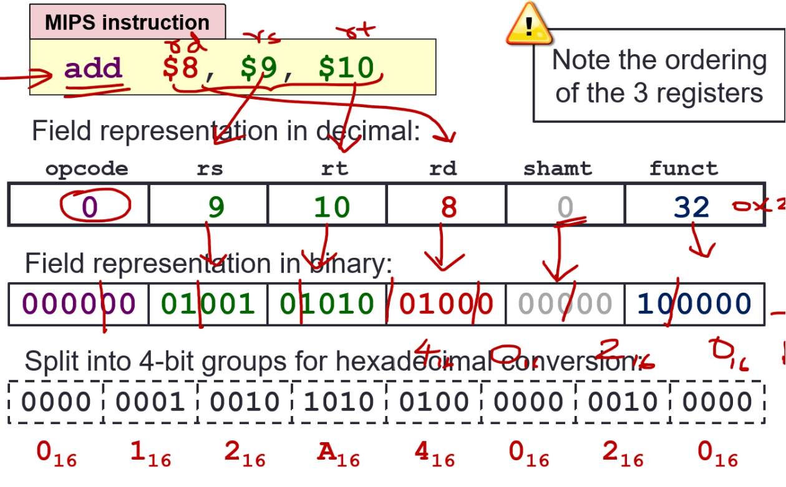
I format(Immediate):
op $r1, $r2, Immd(e.g.: lw sw beq bne)opcode rs rt immediateopcode (6 bits): uniquely specifies an instruction
rs rt (5 bits): rs: source register. rt: destination Note the difference in I and R format!
immediate(16 bits) : signed integer(2s complement).
For beq/bne, immediate is not enough to specify the entire target address(memory address: 32 bits). Thus, we do PC-Relative Addressing (a branch often change the PC value by a small amount)! When branch is not taken, PC = PC + 4, when taken, PC = (PC + 4) + immdiate * 4(1 word = 4 address). Where immediate is a signed two's complement integer (the number of instruction needed to jump).
Program Counter: a special register that keeps address of instruction to be executed in the processor.
J format(Jump):
op Immdopcode target-addressopcode (6 bits)
target-addres (26 bits): Assume we go word by word, then it's 28 bits. Where do we get the other 4 bits? We choose the 4 most significant bits from PC + 4. Thus the maximum jump range would be \(2^28\) bytes = 256 MB. Effective Address: target-address + 00(by word)
Steps: write out address(in binary) of PC + 4, write out address to jump to. Take the middle 26 bits and store into target address(despite the 4 significant bits and the last 2 0s)
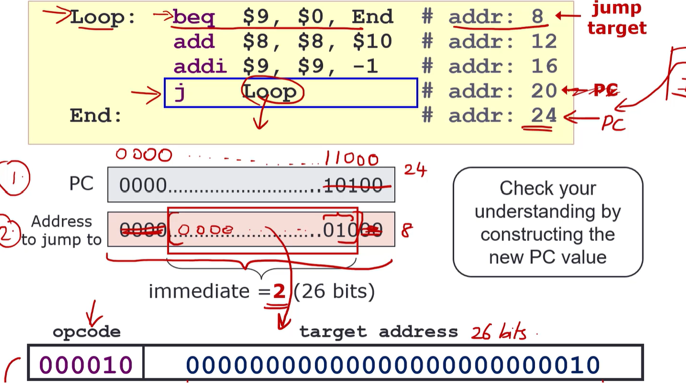
ISA Concepts
Overview
CISC vsRISC
Complex Instruction Set Computer
- Single Instruction performs comple operation in order to get smaller program size. No room for hardware optimization
Reduced Instruction Set Computer
- Keep instruction set small and simple. Burden on software to combine simpler operations to implement high-level statements.
Concept 1: Data Storage
Storage Architecture:
Stack Architecture (Implicit)
Accumulator Architecture (Implicit)
General-purpose Register Architecture (Explicit) (most common choice) (CISC use mixture)
Register-memory architecture(one operand in memory)
Register-register(load-store) architecture (MIPS) (RISC use)
Memory-memory architecture: All operands in memory
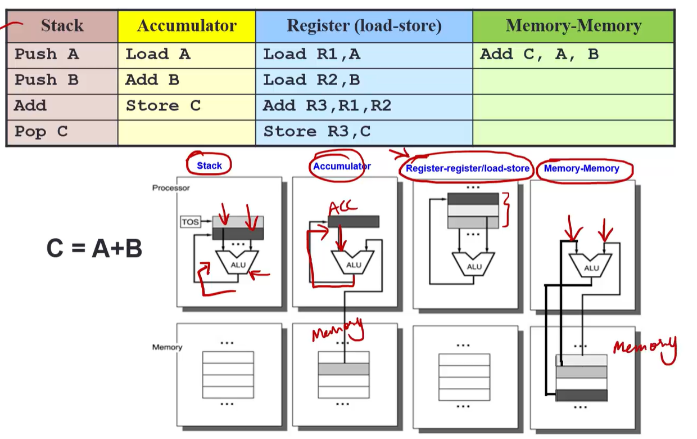
Concept 2: Memory Address:
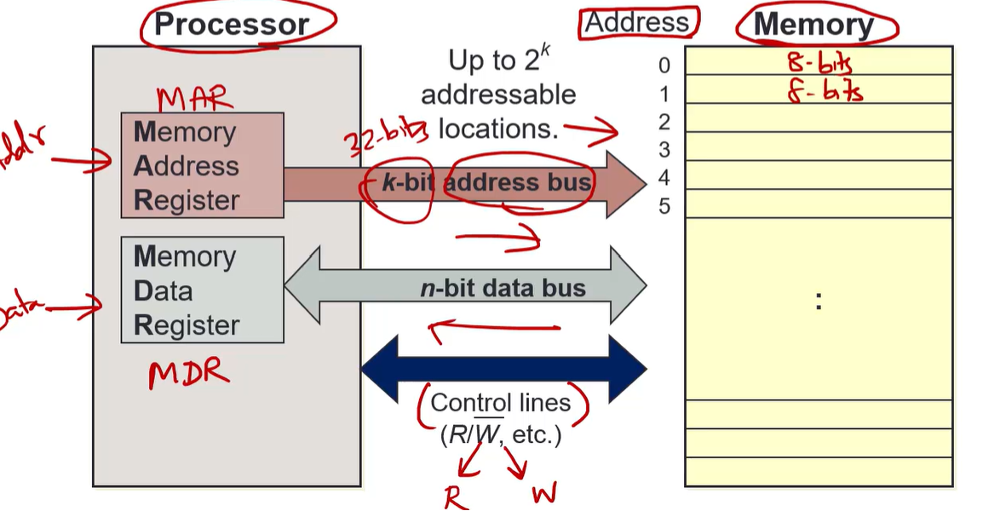
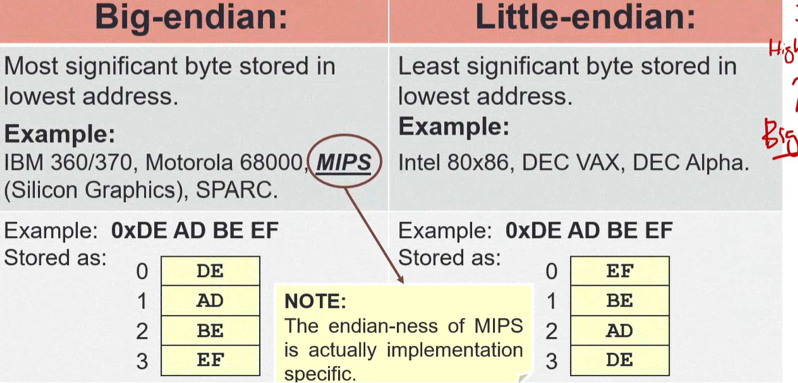
Concept 3 & 4: Operations in Instruction Set and Instruction Formats
Instruction Length
- Variable Lenght vs Fixed Length: Variable length instructions are fetched by parts. The second part of the instruction is loaded due to the instruction of the 1st part...
- Very Long Instruction Word architecture: Instructions are 64 bit long and can load 32/64 bit instructions.Concept 5: Instruction Encoding
Data Path
Fetch
Fetch the instruction from the PC and output to the decoding stage.
Elements:
Instruction Memory: a sequential circuit
Adder
Clock: [U] how do you implement this? what about the time needed for PC to be updated？ What is the point of having this?
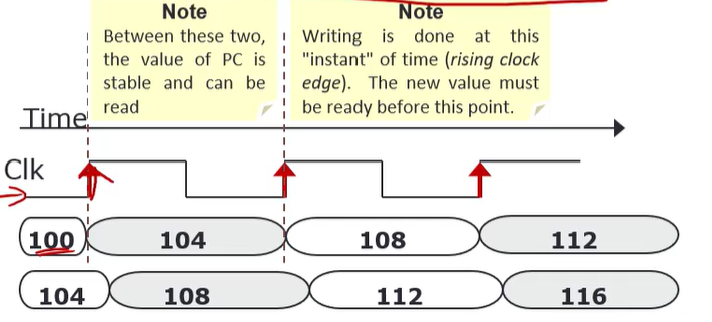
Decode
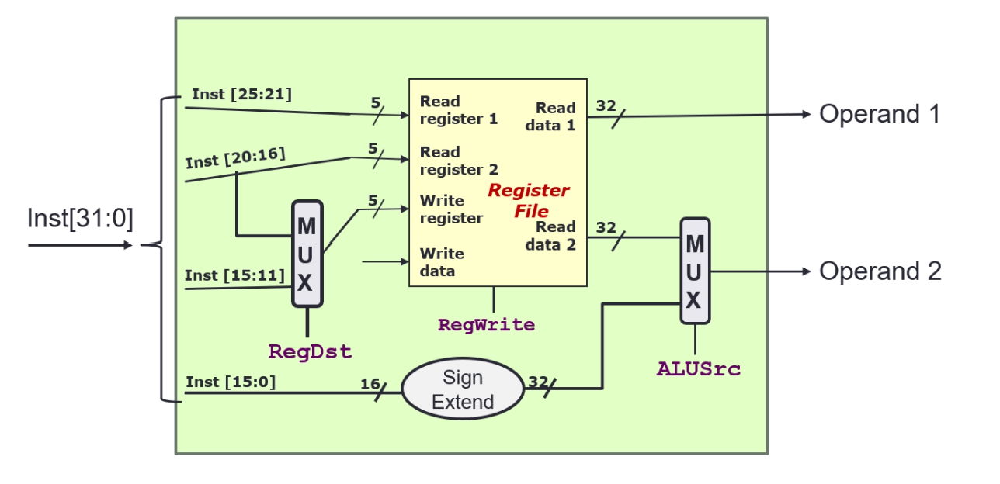
Elements:
Register File: collection of registers. Input the address and output data.
RegWrite: control signal to indicate whether the data in "Write Data" will be written into the Write Register
RegDst: Multiplexer that decides whether the write register reads from rt(0, I-Format instruction) or from Inst15:11.
ALUSrc: Multiplexer that decides what is written into Operand 2 of ALU(0 for read data2 and 1 for immediate value, note that for
branchinstruction, ALUSrc is set to 0 because Immediate value is fetched to the PC + 4 part). If we take immediate value, we extend it to 32 bits by filling in the 16 bits by the sign bit.(e.g. [U])
Execution Stage

Functionalities
Arithmetic: add / sll / and
Memory: Address calculation
Branch: register comparison and target address calculation.
Elements:
ALU(Arithmetic Logic Unit)
Control: 4-bit todecide the particular operation
isZero: output 1 if A op B == 0
Mutiplexer: Choose between PC + 4 or PC + 4 + offset.
- PCSrc: 0 if it is the next Instruction, 1 if it is the next branch(PC + 4 + Immediate Value)
Memory Stage
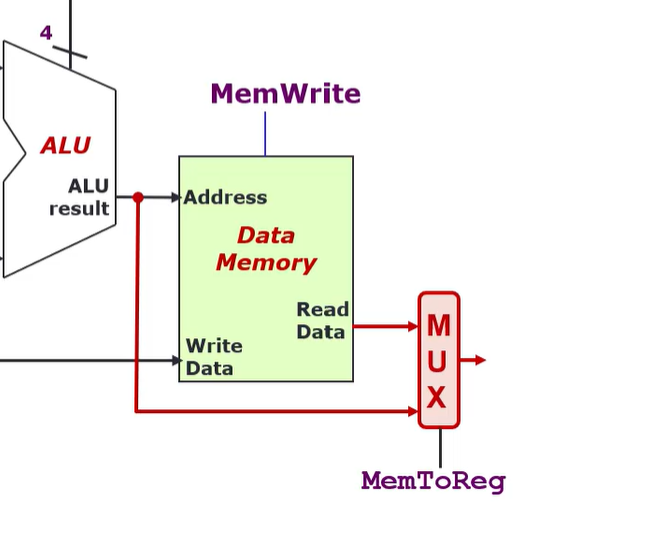
I/O: Fetch data fom ALU stage and output the results to be stored
Elements:
Data Memory: why is this needed?
MemRead and MemWrite: only one is asserted at any time. If both are 1, error occur.
Write Data: for
swinstructions, The src regiter's address is passed to WR and the content is fetched by RD2, then it's passed to the Write Data part and stored in the new address.MemToReg: Decides whether the data should be read from memory (1) or from the ALU output(0).
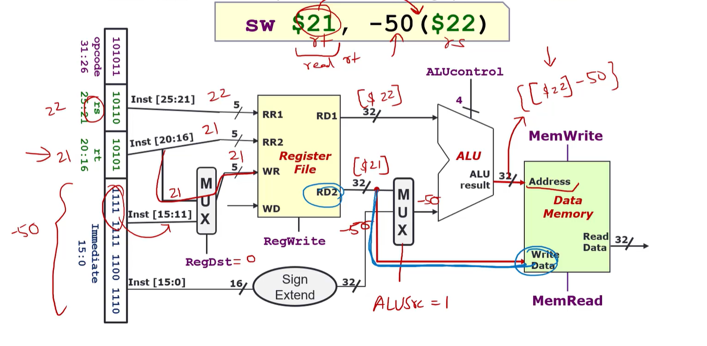
Register Write Stage
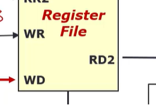
I/O: Input: computation result from memory/ALU
Elements:
Register File
Write Register: takes in the address of which register to write in from the Decode Stage
Write Data: take in the data to write in
Elements
- Multiplexer: Control = k, select \(in_k\) as output.
Overview of Execution of a C programme
Compiler
Compile the C programme into MIPS assembly code.
- For if/else statement, in order to have shorter code, we inverse the code. E.g.:
1 | # Original Code |
Combinatory Circuit
Concept
We need a control unit to generate the signals for each
multiplexer/Unite based on op-code and possibly function code. A
combinatory circuit is a machine that changes the output
immediately as the input changes. A Sequential Circuit is a
machine that changes output only depending on a clock signal and the
input(e.g. PC).
ALU
Introduction to ALU
ALU is a combinatory circuit.
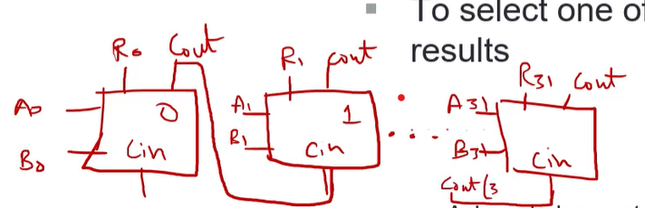
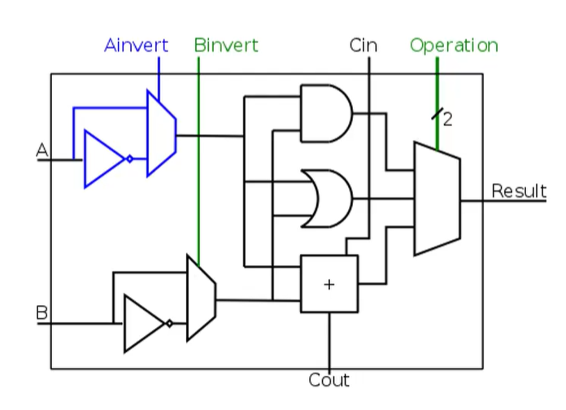
If Ainvert = 1, the multiplexer for
Awould chooseA'.Operation: Choose from the 3 results: and (00) / or(01) / add(10)
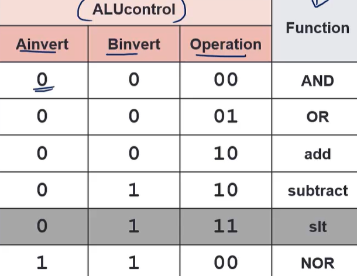
Do note that for subtraction, in order to get A - B from A + B', we set the Cin to be 1. (in 2s complement)
- We use
A'to represent not A, useA.Bto represent A and B, useA+Bto represent A or B
Producing ALU signal
Use opcode to generate
ALUopsignalslw/sw: 00
beq: 01
R-type: 10
Use ALUop and Function field to generate 4-bit
ALUcontrolsignal.
Clock Implementation
Multi-Cycle Implementation
Single Cycle Implementation: for all kinds of instructions(sw/lw/beq), we select the slowest to have be the clock. In this case it's slow.
Multi-Cycle Implementation: We break down the steps in the instruction(e.g. InstMem, Read from register, ALU operation...), choose the longest one as a cycle. This allows different instructions to be implemented in different times.([U] Why would this be faster? If this works, why don't we just divide the time into smaller steps?)
Pipelining
[U] TBC.
Assembly to Binary
- opcode 0: R format; 2: J format. Anything else: I format.
Boolean Algebra
Digital Circuits
Circuits that has two states: 1 and 0.
Combinational circuits: No memory, output depends solely on the input
Sequential: With memory, output depends on input and current state
Operators and Operations
Operators
Precedence from highest to lowest
. Not
. And
+ Or
Do note the order is different to that in CS1231S
Duality: In an equation, if you swap all the + and
., swap all the 0s and 1s, the equation is still true.(E.g.
\(x + 1 = 0 <-> x . 0 = 1\) or
DeMorgan's Law)
Boolean Functions
Basics
Complement Functions: given a boolean function f, the complement function of that function f' is obtained by interchanging 0 and 1 in its output
Literals: boolean variables on its own or complemented form
SOP and POS
Product Term: the and of several literals or a single
literal. E.g. x.y'.z
Sum Term: The or of several literals
Sum Of Product: the sum of several product terms or a
single product term.
Product Of Sum: the prodcut of several sum terms or a
single sum term.
Every boolean expression can be written as SOP / POS term.
Min and Max
Min Term: a min term of n variables is a product term of
n literals.
The min and max term of 2 variables is named m0-m3:
m0: x'.y' / x+y
m1: x'.y / x+y'
m2: x.y' / x' + y
m3: x.y / x' + y'
mx' = Mx
A good way to memorize: imagine x' as 0 and x as 1. Then x'y' is 00, which is 00, x'y is 01, which is 1
Max Term: a max term of n variables is a sum term of n
literals.
Canonical and Normal
Sum of min terms = Canonical SOP, we write this by looking at places where the output is 1.
Product of max terms = Canonical POS, we write this by looking at places where the output is 0.([U] check this out yourself!)
Converting Canonical SOP and POS: \[m0 + m1 + m5 = \sum{m(0,1,5)} = \prod{M(2,3,4,6,7)}\]
Logic Gates
Logic Diagram
NAND: negating and. \[X nand Y = (X.Y)'\]
exclusive or(XOR): output 1 if different. \[X xor Y = X'.Y + X.Y'\]
XNOR: (XOR)' \[X xnor Y = X'.Y' + X.Y\]
NOR: \[X nor Y = (X+Y)'\]
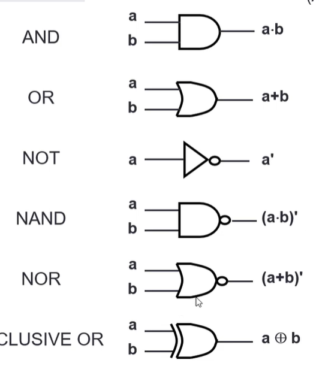
We call the (AND OR NOT) gate a complete set of logic(sufficient to build any gate). (NAND) or (NOR) gate is also a sufficient set of logic
We can easily implement SOPs using 2-level (AND OR) gates or 2-level (NAND) gates(NOT is not considered a level here). (AND OR) gate to (NAND) gate: simply change everything to NAND gates.
We can easily implement POSs using 2-level (AND OR) gates and 2-level(NOR) gates. ([U] Why!)
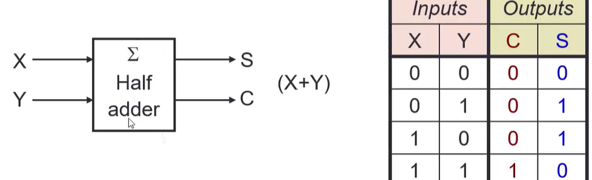
Gray Code
- A gray code sequence is a binary representation of a serires of codes, where the next code changes only 1 bit at a time. There are many gray code sequences. Generating a gray code sequence: Recursive! generate a 2-bit gray code sequence, copy the last one, add one to the front and flip the whole sequence!
Delays:
Given a logic gate with delay t, where inputs are stable at t1,t2,t3...etc.then the earliest time that the circuit would responese is \[max\{t_1,t_2, t_3,...\} + t\]
K-Maps
ensure that minterms of adjascent cells differ by one literal. IOW, the rows and columns should be arranged in gray code.
- Grouping: We can decrease literals in the final expression by
grouping cells in the k map! However, we can only group \(2^n\) adjacent cells.
Adjacent cells here refers to the wrapping around theory. We call th
bigger groupings of minterms
prime implicats.Essential Prim Implicantsare PIs that are has at least one element tht is not covered by any other PIs.
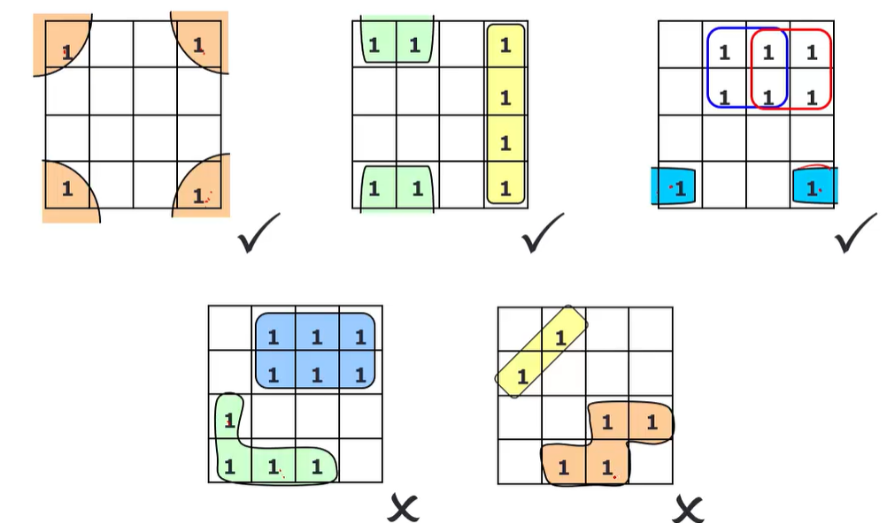
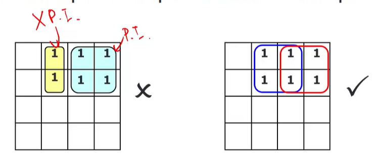
- Grouping: We can decrease literals in the final expression by
grouping cells in the k map! However, we can only group \(2^n\) adjacent cells.
Adjacent cells here refers to the wrapping around theory. We call th
bigger groupings of minterms
Finding the simplist SOP expression using K-Map!
mark all PIs
choose the EPIs
choose the rest of the PIs.
Finding the simplist POS expression!
Draw the reversed K-map F'(flip the 0s and 1s)
Find the SOP of F', lets say it is F' = B.D' + A.B
F = (F')' = (B.D' + A.B)' = (B' + D).(A' + B')
Don't Care Conditions: Conditions that we don't care. We use \(\sum{d}\) To show the set of don't care midterms. E.g.
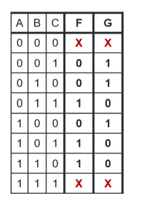
\[F(A,B,C) = \sum{m(3,5,6)} + \sum{d(0,7)}\] You can treat X as either 0 or 1.
Logic Circuits
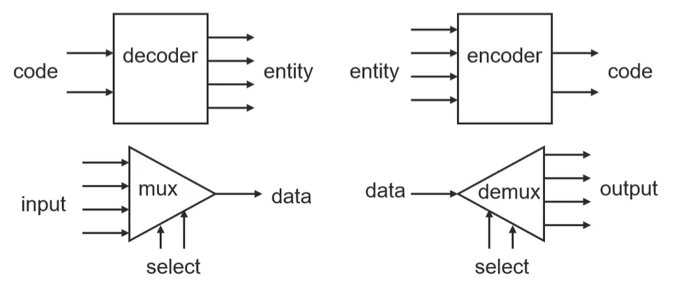
Decoder. Decode a n-bit code to m entities, where \(m <= 2^n\)
- Decoders are enabled whenever E = 1 if they are one-enable or vice versa. We can use this feature to construct larger decoders using smaller decoders. E.g. To build a 3x8 decoder from 2 2x4 decoders and an inverter:
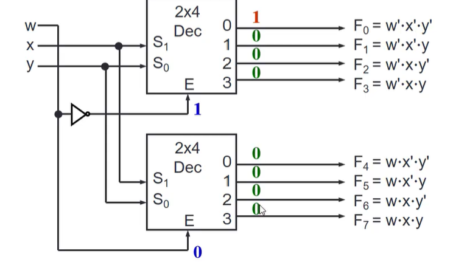
- Normal Outputs: active high outputs; Negated Outputs: active low outputs(the output is the complement of the normal output)
Encoder
- Priority Encoder:
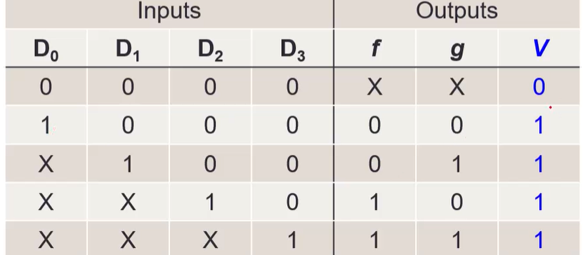
Multiplexer
- A \(2^n:1\) multiplexer is made
from a \(n:2^n\) decoder and AND Gates.
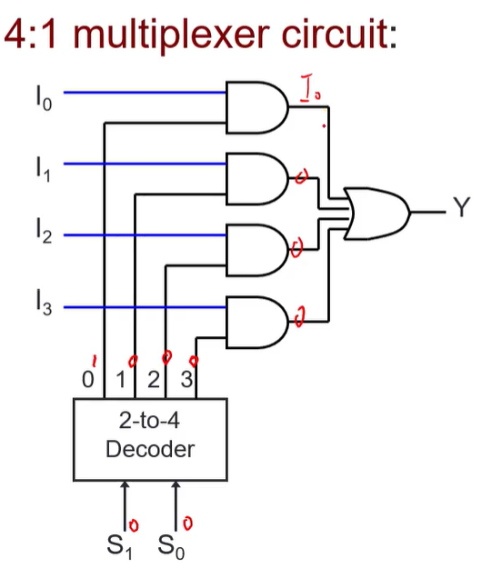
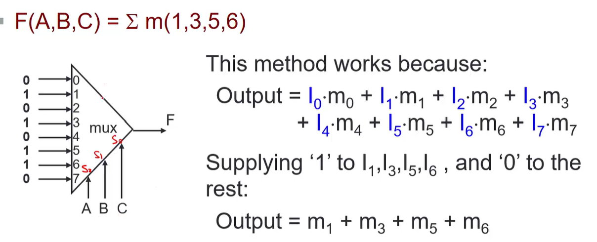

- A \(2^n:1\) multiplexer is made
from a \(n:2^n\) decoder and AND Gates.
Sequential Circuits
Basic Concepts
Types:
Synchronous, where outputs changes at a specific time;
Asynchronous, where outputs changes at any time. (PRE(PRESET) is high, Q is set to high, CLR(CLEAR) = HIGH, Q is set to LOW)
Notations:
We use \(A^+\) to denote the next stage of \(A\)
State Diagram: Each circle represents a present state, each arrow represents a transition, where the "0/1" represents input of 0 and output of 1(The output as the whole sequential circuit. There could be no outputs.).
We use 2 lettes to denote each flip-flop input: 1st letter denote the input name(J/K/S/R etc), second letter denote the name of the flip-flop
Remember the clock input
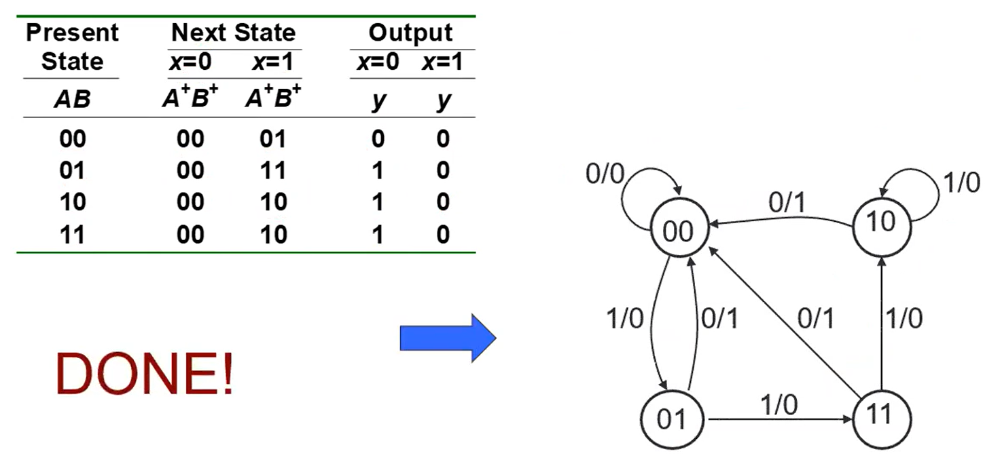
Synchronous Inputs
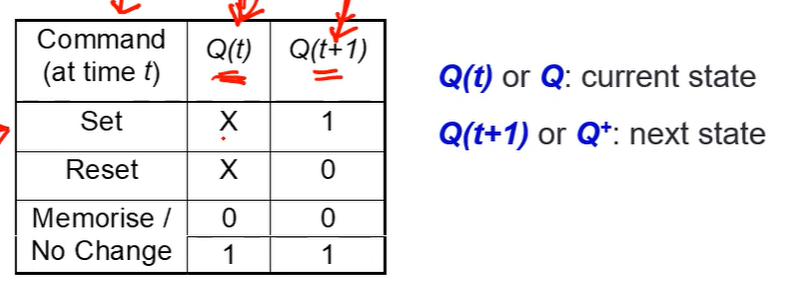
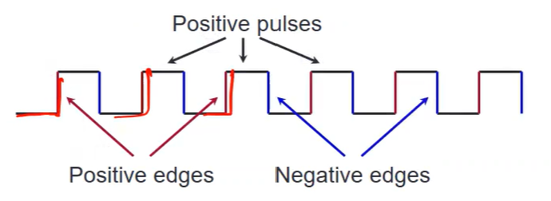
Pulse Triggered: Latches
- Active High input S-R Latch: S for Set, R for Reset. If S and R are 0, no change will be made to Q. If S and R are 1, Q and Q' would be both low, which is invalid. Outputs change only when EN is high
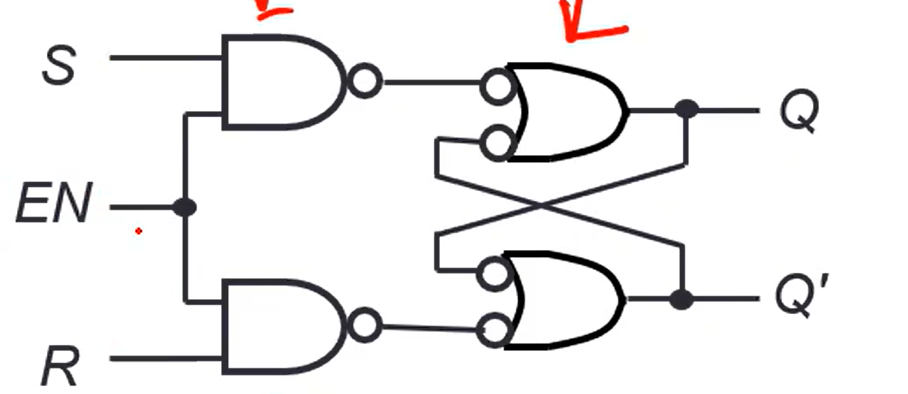
Do note that sometimes Q and Q' changes more than once so we need them to change until it is stable.
- D-Latch: Make input R equal to S - there is no invalid state.
Edge Triggered: Flip-flops
Positive Edge-Triggered: A ">" symbol , where the circuit is triggered on the rising edge.
J-K Flip-Flop: When both J and K are High: the output is toggled.(Q and Q' are fed back to the NAND gate.)
T Flip Flop: J-K Flip Flop that makes J = K.
Design a Circuit
Memory
 [U]
[U]
Pipelining
Basiccs
Pipeline rate is limited by slowest pipeline stage and dependencies
- The five execution stages in MIPS each takes 1 clock cycle.
- There will be additional registers between each stage.
- IF/IF: Register numbers for reading two registers; 16-bit offset to be sign-extendeed to 32-bit; PC + 4
- ID/EX: Data Values from Register File; 32-bit immediate value; PC+4
- EX/MEM: (PC+4+Immediate * 4); ALU result; isZero?; Data Read 2 from register
- MEM/WB: ALU result; Mem Read data
- However, because of the pipeline design, the Write Register Number might be covered by the followed instructions. Thus, we need the Number to be carried through the five stages.
- Control Signals are generated in the decode stage. Thus, the control signals will be carried through the EX/MEM/WB stages(However, the signals for previous stages will not be carried once used.That is, signals for EX stage will not be carried in the EX/MEM register file.)Performance:
- Single-Cycle Datapath: Each instruction takes one cycle \[CT_{single} = max_{max(\sum{T_k})}\]
\[Time_{swq} = I * CT_{seq}\]
- Multi-Cycle Processor
\[\text{Cycle Time: }CT_{multi} = max(T_k\text{(time for each stage)})\]
\[Time_{multi} = I * AverageCPI\text{(average clock per instruction)} * CT_{multi}\]
- Pipelining Processor:
\[\text{Cycle Time: }CT_{pipeline} = max(T_k) + T_d\text{(time for accessing pipeline register)}\]
\[\text{Cycles needed for I instructions: }I + N -1 \text{N-1 cycles needed to fill up the pipeline}\]
\[\text{Time: } Time_{pipeline} = (I + N - 1 ) * CTpipeline\]
For ideal cases, where each stage takesthe sae amount of time, and there is no pipeline overhead(Td = 0), I >> N. \[Speedup_{pipeline} = \frac{Time_{No Pipeline}}{Time_{With Pipeline}} = N\]
- Notes: \[1ns = 1 * 10^{-9} s \]
Hazards
Structural Hazards
A hardware is used by two differet instructions!
Memory: split into instruction memory and data memory
Register: Split the stage into two halfs, where we write the register in the first half and read in the second half(We cannot swap this becuase the instructions are always based on previous instructions)
Data Dependency
Read-After-Write Dependency: The only depndency that causes a pipeline hazard. Lets say data is written into register $2 instruct1, and it is read in instruction 2.
Solution: Forwarding: In instruction 2 execution stage, we override the data that was supposed to be read(that is, the original data before instruct1 was executed), and override it with the new data that is generated in the execution stage of instruct 1. This means that the data is passed to instruct 2 even before the write data stage of intruct1. The data is passed to the next instruction immmediately after execution.
Solution: Stall! What if data is needed before executed!
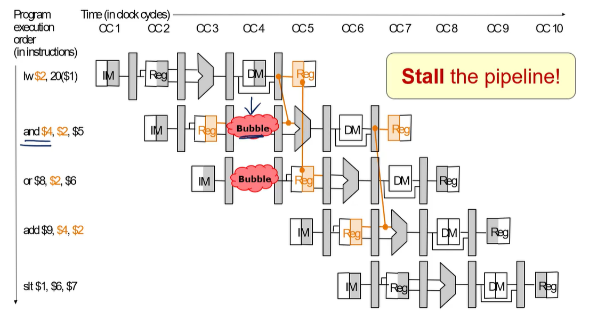
- With only stall, we can only execute IF instruction as before, and ID instruction would be executed after the data is generated. With stall and forwarding, we can execute IF and ID as before, and we override data from ID technique in EX stage. That is, only EX stage will be delayed
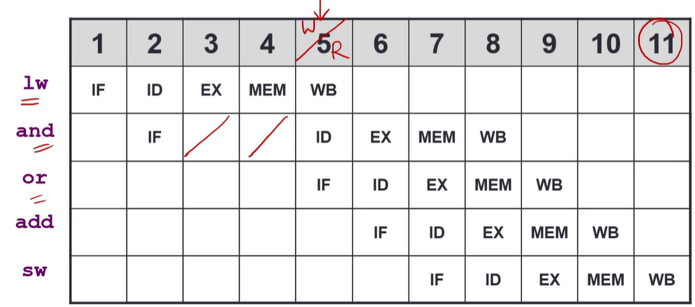

Control Dependency
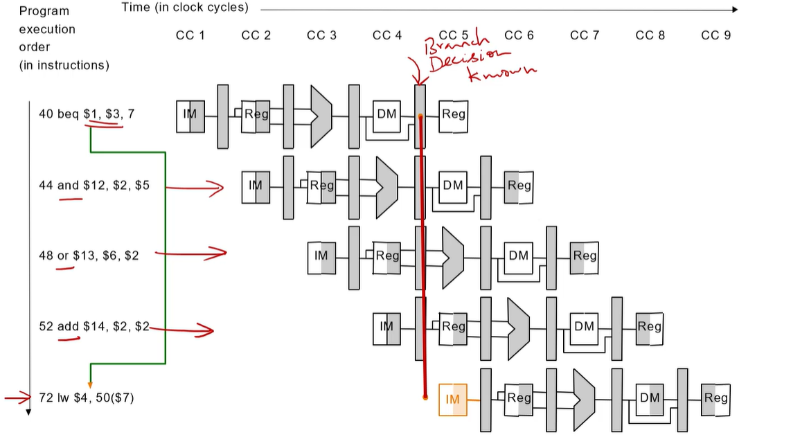
Early Branch: We decide whether to branch in the instruction decode stage. This reduce the 3 clock waiting time to 1. However, this brings problem of data dependency since the data is needed in the ID stage, thus further stall is still needed.
- If nothing, then 1 cc needed. If one add instruct before, then 2cc, if lw, then 3cc needed
Branch Prediction
Assume that branch is not taken. If prediction is wrong, we flush all the wronginstructions.
We combine this technique with the early branch technique to speed up(3cc delay -> 1cc delay).
This technique saves one delay everytime a correct prediction is made, in comparison to Early Branching
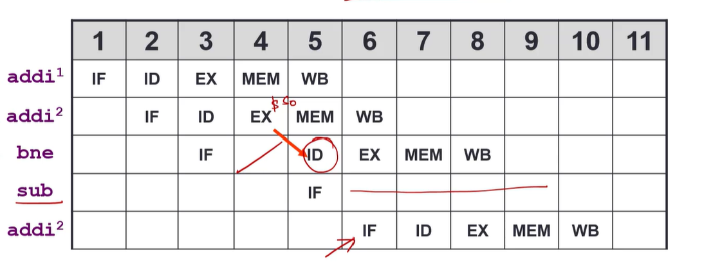
Delayed Branch:
Observation: Branch outcomes takes X number of Cycles to be know would cause X delay.
Move non-control dependent instructions into the X slots following a branch. This is done by the compiler. If no such instruction is find, then a no-op(NOP) instruction is put into the delay slot.
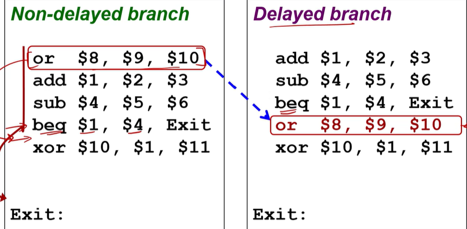
Things to say
Why do we even compare C with Python in this course?